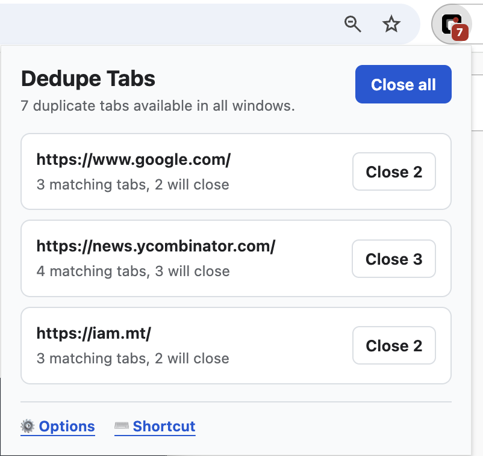
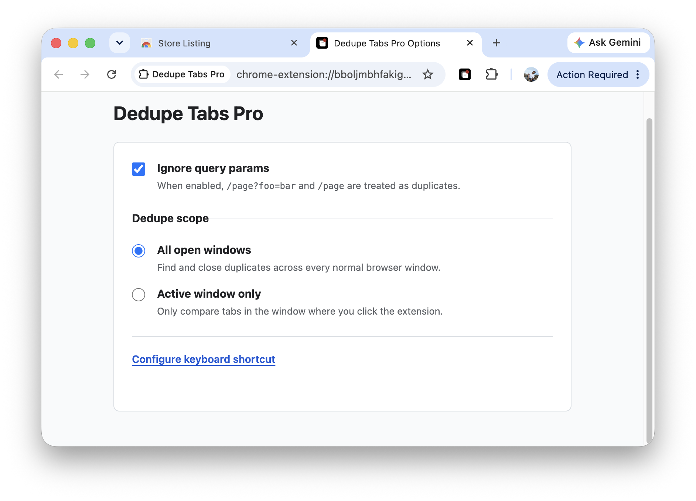
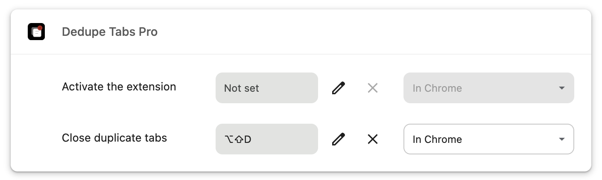

Dedupe Tabs Pro
Dedupe Tabs Pro is a simple Google Chrome extension that does one thing and one thing only - Dedupe Tabs...like a Pro ;-)
Screenshots



Features
- Review duplicate tab groups from the extension toolbar popup.
- Close duplicates for one URL group at a time.
- Close all duplicates with a configurable keyboard shortcut.
- Choose whether query parameters are ignored when matching URLs.
- Match duplicates by hostname instead of full URL.
- Ignore subdomains during hostname matching.
- Choose whether duplicate matching runs across all windows or only the active window.
- See a toolbar badge when duplicate tabs are available to close.
Privacy
Dedupe Tabs Pro processes tab URLs and titles locally in your browser to identify duplicates. It does not transmit, sell, share, or transfer user data.